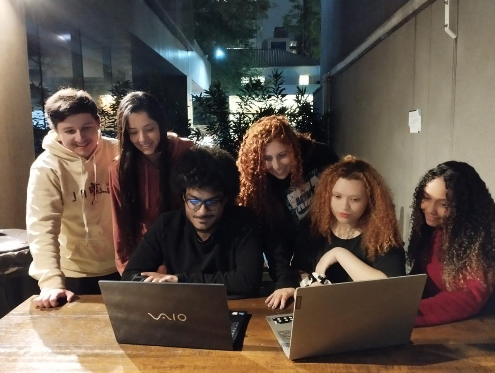

❤ A Veria Maria, minha mamãe e minha eterna melhor amiga, é a quem dedico todo meu esforço, minha conquista de chegar até aqui e a quem homenageio com todo o meu amor. Obrigada por sempre ter me defendido, igual uma mamãe leoa protege seus filhotes, obrigada por ter me ensinado e apoiado até nossos ultimos momentos juntas. Sinto um orgulho enorme de ser sua filha e lhe prometo que a senhora estará para sempre viva em mim.
❤
❤ A Atena, minha primeira gatinha, que me ensinou tanto sobre os gatos, que foi minha companhia em momentos difíceis, e me mostrou o amor que os gatos sentem pelos seus donos, além de eu ter a honra de ter sido tão amada por uma mini panterinha, meu muito obrigada. Você estará pra sempre em minhas lembranças e em minha pele.
❤
❤ Ao Jose Roberto, meu papai, minha eterna gratidão por ser um pai incrível, que me incentiva a continuar estudando e que sempre faz o máximo que pode para me proporcionar a melhor estrutura possível. Obrigada por ser tão carinhoso com as gatauras, obrigada por demonstrar seu amor em gestos sutis mas que me fazem tão feliz, como encher minha garrafa de água e colocá-la para gelar pois o senhor sabe que eu amo água gelada. Obrigada por ser um pai tão amigo, e que apesar das brincadeiras beirarem um bullying, obrigada por me fazer rir todos os dias. A conquista de eu estar me tornando uma pessoa cada dia melhor e estar mais perto de conquistar os meus sonhos, só está sendo possível por ter um pai como você. Eu te amo mil milhões meu rei.
❤
❤ Aos meus avós, Dona Maria e Seu Antonio, obrigada por cuidarem de mim, obrigada pela assistência e compreensão que torna possível uma maior dedicação em minha graduação. Sem vocês minha vida seria muito mais complicada, agradeço eternamente por cuidarem tão bem de mim, como se eu fosse vossa filha. Agradeço também por cuidarem tão bem das gatinhas, eu e elas amamos muito vocês.
❤
❤ A minha amiga Pricilla, que faz eu me sentir sortuda e grata desde o dia em que nos conhecemos, agradeço por ser tão inspiradora para mim, além de ser uma grande apoiadora e conselheira, e por principalmente você, ter me encorajado a ingressar nesta faculdade, de me recordar que sou capaz e de dizer que eu conseguiria sim aprender tecnologia. Mil vezes obrigada, você é mais que minha amiga, você é minha família.
❤
❤ Ao Miqueias, meu namorado e futuro pai dos meus gatitos. Obrigada por ser meu amigo, meu parceiro, por me apoiar, me ajudar com seus dotes de Designer gráfico, me ouvir, acolher e me lembrar do meu compromisso público contigo e me encorajar a não desistir do que me faz feliz. Tenho sorte de ter te conhecido, e espero que você seja pra sempre meu o timtim.
❤
❤ Agradeço muitíssimo aos meus amigos e colegas de faculdade, pois apesar do receio que tive quando ingressei na faculdade de não conseguir um bom entrosamento com meus colegas de sala, fui surpreendida com pessoas incríveis que me acolhem, me ajudam, tornam meu dia e meu aprendizado mais leve e inclusive me ajudaram a realizar este trabalho do jeito que imaginei, me auxiliaram em dúvidas com códigos, com opiniões, com ideias que me desencadearam insights incríveis e por também me apoiarem com tanto carinho. Faço uma menção honrosa a: Ketelyn, Vinicius, Amanda, Rabello, Hosana, Samarah, Nathália, Caio, Gabriel e Bins; obrigada por cederem um pouco do tempo de vocês me auxiliando nesta etapa tão importante.
❤
❤ E por fim, mas nada menos importante, sou extremamente grata ao corpo docente da faculdade, honrosamente aos meus professores: Frizza, Marise, JP, Vivian, Petry, Betina, Marcela, Araripe, Murilo, Piassi e Vitor; obrigada por nos ensinarem com tanto carinho, paciência e entusiasmo, obrigada por tirarem nossas dúvidas, oferecer apoio e estarem abertos a nos ouvir e a nos desenvolver respeitando e tratando com tanto carinho nossas individualidades. Vocês são chaves importantes para a abertura das portas dos melhores caminhos do meu futuro, não esquecerei de vocês, obrigada por contribuírem tanto para que meus sonhos se tornem possíveis; gratidão a todos.
- Em sua memória, mamãe. ❤